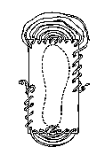
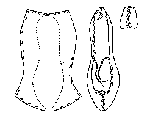

The most crude pattern is the rectangular one; it should measure the length of the foot x twice the width of the foot. There is a small notch at the heel. The amount of thonging needed can be measured by measuring from the tip of the forefinger around the back of the elbow and back again. This is then cut in half, one piece for the heel, one for the toe.
If the shoes become stiff while they are being worn they can be soaked in cold water. In theory, the foot remains on the inside of the shoe during this process.
It should be mentioned that this type of shoe has not been found in any ancient context that I know of, but was worn traditionally on the Aran Islands in the early 20th Century. It does strongly resemble a "Rivelin" found in the Shetlands, and a form of shoe described in a letter to Henry VIII written in 1542.
These were refered to as "Rifeling" in Saxon (aka Riwelingas, Rewylynys, Rowlingas, Rulyions, Rullions, Rivilin (in the Shetlands), Rivelins (in Scotland and the Orkneys), Pampooties in the Aran Islands, Skin-Sko in Iceland, amd Cuaran in Gaelic.
This design is based on a description found in Lucas and a more thorough discussion found in Hald.